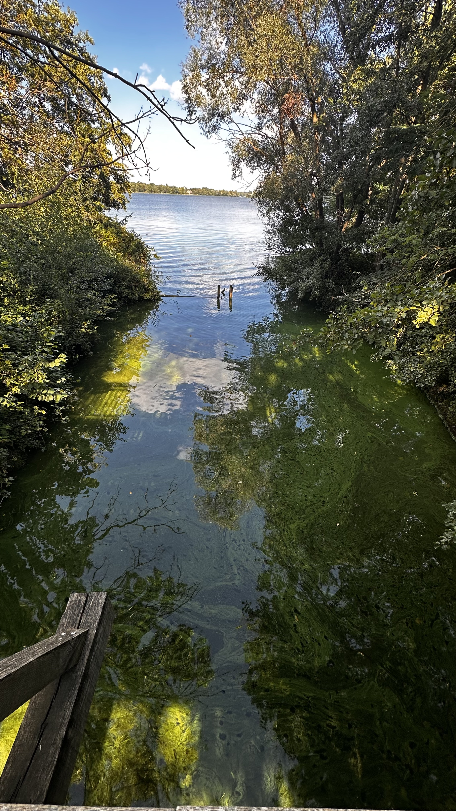

Casino Glienicke
Klassizistisches Hauptgebäude (1824-1826) von Karl Friedrich Schinkel. Italienische Villa mit Säulenportikus, Terrassen und Havelblick. Museum mit Originalausstattung.

Italienischer Villengarten an der Glienicker Brücke
Park Glienicke ist ein 116 Hektar großer Landschaftspark im italienischen Villenstil am Ufer der Havel. Gestaltet von Peter Joseph Lenné und Karl Friedrich Schinkel für Prinz Carl von Preußen, verbindet er mediterrane Gartenkunst mit preußischer Landschaftsarchitektur. Seit 1990 UNESCO-Welterbe.
116 Hektar zwischen Berlin-Wannsee und Potsdam
Peter Joseph Lenné (Gartenarchitekt) und Karl Friedrich Schinkel (Architekt)
Italienischer Villengarten mit klassizistischen Elementen
Prinz Carl von Preußen (1816)
Seit 1990 Teil des Welterbes "Schlösser und Parks von Potsdam und Berlin"
Park kostenlos, Casino und Gebäude kostenpflichtig
Von der preußischen Sommerresidenz zum Symbol der deutsch-deutschen Teilung und Wiedervereinigung.
Prinz Carl von Preußen erwirbt das Gut Glienicke und beauftragt Peter Joseph Lenné mit der Gestaltung eines Landschaftsparks. Ziel: Ein italienisch inspirierter Garten als Sommerresidenz.
Karl Friedrich Schinkel entwirft das Casino im klassizistischen Stil. Inspiriert von italienischen Villen, mit Säulenportikus und Terrassen zur Havel.
Die Glienicker Brücke wird zur Grenze zwischen West-Berlin und DDR. Der Park liegt im Grenzgebiet. Die Brücke wird berühmt als "Agentenbrücke" für Spionageaustausch im Kalten Krieg.
Nach dem Mauerfall wird die Glienicker Brücke wieder geöffnet. Der Park wird Symbol der Wiedervereinigung.
Anerkennung als Teil des Welterbes. Umfangreiche Restaurierung von Park und Gebäuden.
Entdecke die architektonischen Meisterwerke und historischen Orte.
Klassizistisches Hauptgebäude (1824-1826) von Karl Friedrich Schinkel. Italienische Villa mit Säulenportikus, Terrassen und Havelblick. Museum mit Originalausstattung.
Historische Brücke zwischen Berlin und Potsdam (1907). Berühmt als "Agentenbrücke" im Kalten Krieg. Schauplatz von Spionageaustausch. Heute Symbol der Wiedervereinigung.
Romantischer Innenhof (1832) mit mittelalterlichen Architekturteilen aus Italien. Kreuzgang, byzantinische Säulen, Brunnen.
Aussichtspavillon (1835) von Schinkel am Havelufer. Bietet Panoramablick über die Havel. Beliebter Fotopunkt mit Blick zur Pfaueninsel.
Monumentaler Brunnen mit Löwenskulpturen. Zentrum des Pleasuregrounds vor dem Casino. Inspiriert von italienischen Renaissance-Brunnen.
Historisches Wirtschaftsgebäude im italienischen Stil. Heute Café und Veranstaltungsort. Schöner Biergarten im Sommer.
Die Glienicker Brücke verbindet Berlin-Wannsee mit Potsdam. Im Kalten Krieg (1961-1989) war sie Grenze zwischen West-Berlin und DDR. Berühmt wurde sie als Schauplatz von Spionageaustausch zwischen USA und Sowjetunion – daher der Name "Agentenbrücke".
Drei spektakuläre Agentenaustausche fanden hier statt: 1962 (Rudolf Abel gegen Francis Gary Powers), 1985 (23 Agenten) und 1986 (Anatoly Shcharansky gegen Karl Koecher). Hollywood-Filme wie "Bridge of Spies" (2015) mit Tom Hanks machten die Brücke weltberühmt.
Nach dem Mauerfall 1989 wurde die Brücke wieder für alle geöffnet. Sie ist heute Symbol der Wiedervereinigung und verbindet Berlin und Potsdam.
Über 8 km Wanderwege durch den Park. Spaziergang zur Glienicker Brücke sehr empfehlenswert.
Erlaubt auf Hauptwegen. Beliebte Radroute von Berlin nach Potsdam über die Glienicker Brücke.
Hunde an der Leine willkommen. Schöne Spazierwege am Havelufer.
Casino Glienicke: Führungen April-Oktober, Sa/So 10-17 Uhr. Eintritt kostenpflichtig.
Jägerhof: Café und Restaurant mit Biergarten. Schöne Terrasse im Sommer.
Parkplatz am Jägerhof (begrenzt). ÖPNV empfohlen: Bus 316 bis "Glienicker Brücke".
Park Glienicke bietet spektakuläre Motive für Architekturfotografie und Landschaftsaufnahmen. Die berühmte Glienicker Brücke ist ein ikonischer Fotospot, das Casino Glienicke glänzt im klassizistischen Stil, und die Große Neugierde bietet Panoramablick über die Havel. Hier findest du die besten Spots mit Saison-Empfehlungen und praktischen Tipps. Wichtig: Drohnen sind verboten, Wegegebot beachten!
Lade Foto-Spots...
Historische Besonderheiten. Story-Walks extern organisiert (nicht SPSG).
Exklusive Dinner/Podien zu Spionage-Themen im historischen Ambiente
Product-Launches für Kamera/Optik mit professioneller Kulisse
Event-Genehmigung bei SPSG erforderlich. Kapazitäten limitiert.
Erlebe italienisches Flair an der Havel und besuche die historische Glienicker Brücke.